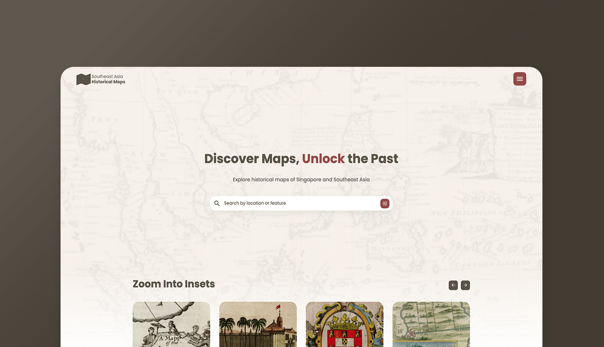
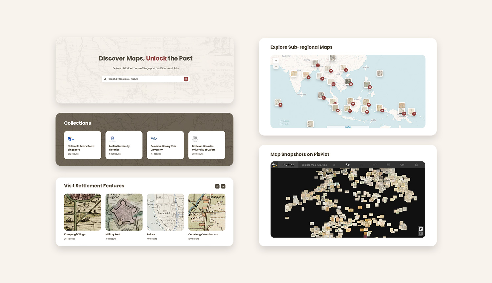
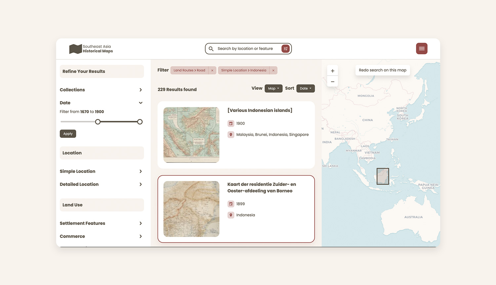
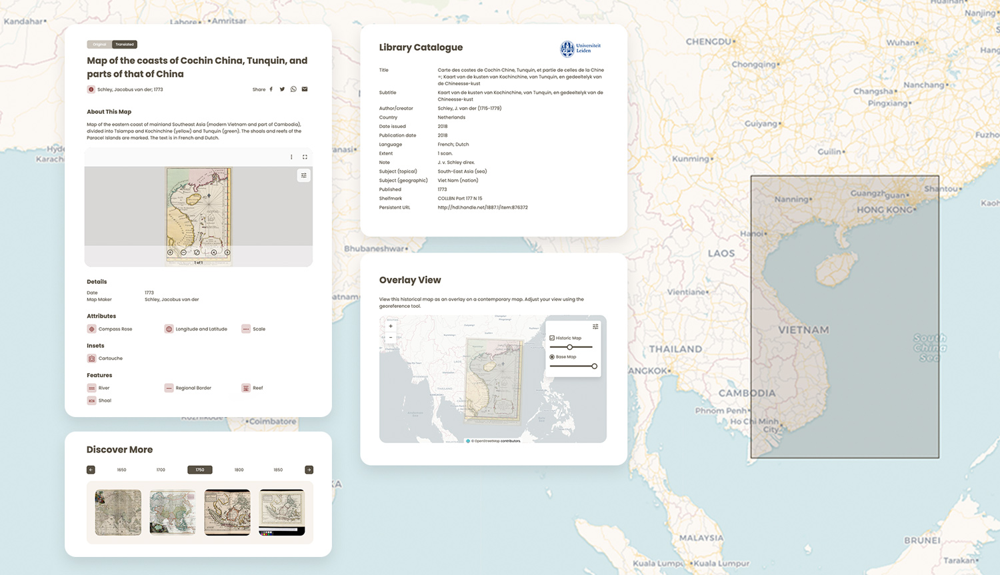
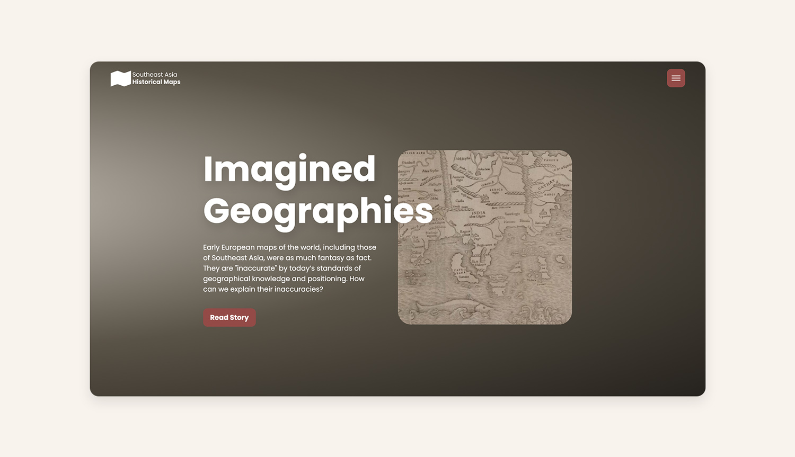

Historical Maps
Introduction
Challenge: The goal was to create a cohesive digital exhibition of pre-1900 Southeast Asian maps from various world-famous libraries. A major challenge was designing a single platform that could seamlessly access, display, and search maps from disparate databases, all with inconsistent metadata and varying formats. The platform needed to provide a seamless user experience while preserving the integrity of the original data.
Decision Making:
- Unifying Inconsistent Metadata: To handle inconsistent data from multiple sources, I designed a "library catalogue" card system. This kept the original source data separate while providing users with a another set of clear, consistent metadata curated by our own, preserving data integrity.
- Handling Multilingual Titles: I implemented a bilingual toggle button to address non-English map titles. This lets users switch between the original title and an English translation, making the content accessible without presenting unauthorised data as fact.
- From Archive to Storytelling: To make the collection more engaging, I introduced a story-mapping feature. This links maps to relevant historical sources and narratives, transforming static image into a powerful storytelling tool that provides context beyond plain data.
Impact: This platform enhances public and scholarly access to historical maps by providing robust search functionality, enriching the metadata, and introducing a compelling storytelling element. The new design not only streamlines the research process but also transforms a traditional archive into an interactive digital exhibition.
Target Audience
- University-level students
- Advanced level scholars
- Librarians
- General interested public
Process
Competitor Analysis: David Rumsey Map Collection, Harvard Imperiia Project
Data Gathering: online survey, interviews
Establishing Requirements: personas, use cases
Prototyping: low-fi prototype, hi-fi prototype
Evaluation: usability testing, focus groups
Colour Palette
A maroon palette is chosen which represents knowledge and history, as metaphor of encyclopedia book for early maps.
#595246
#944A47
#E6D2D1
#F8F3ED
The Design
Interoperability
The platform facilitates dialogue between collections and creates various exploration pathways, allowing for a seamless experience across different institutions' map collections.
Searching
I designed an advanced search functionality that allows users to filter results by curated metadata and browse with a contemporary geolocation overlay, making it easier for users to find what they're looking for.
Unlocking
I enhanced map discoverability by creating a system to enrich and organise metadata. This included a "library catalogue" card for source data, a toggle for bilingual titles, and added details like descriptions and iconography, providing users with deeper context and improving overall accessibility.
Story-mapping
I created a story-mapping feature that links maps to relevant historical source materials, transforming the collection into a narrative-driven experience that engages both researchers and the general public.
